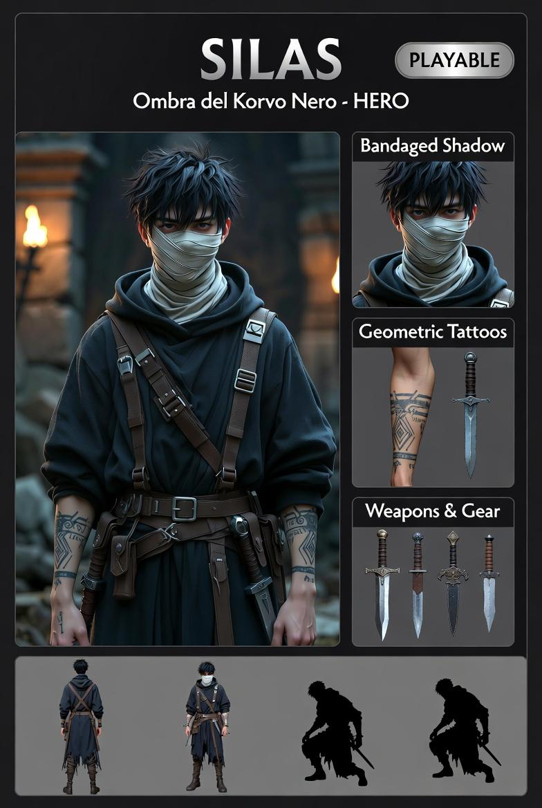

Ombra del Korvo Nero
Giocare Silas è giocare nell'ombra che gli altri non vedono.
⬡ DA IMPLEMENTARE| Evento | Δ Temperatura |
|---|---|
| Colpo ricevuto | −20 |
| Shadow Bind (RMB) | −15 |
| Shadow Teleport (Q) | −25 |
| Shadow Fusion attiva (F) | −5 / s |
| Regen in zona d'ombra | +8 / s |
| Regen fuori dall'ombra | +3 / s |
GameScene.isInShadow(tileX, tileY) ritorna true se:
| # | Condizione |
|---|---|
| 1 | Tile corrente è TILE.SHADOW |
| 2 | Tile corrente è TILE.CORRIDOR |
| 3 | Almeno 1 dei 4 vicini ortogonali è TILE.WALL (perimetro stanza) |
| Input | Condizione | Azione | Valori |
|---|---|---|---|
| WASD | Sempre | Movimento + facing | 200 px/s |
| LMB | Sempre | Pugnalata base | 12 dmg — cd 250 ms |
| LMB | In ombra | Pugnalata potenziata | 18 dmg (+50%) |
| LMB | Dopo Shadow Fusion | Backstab | 36 dmg (×3) — consuma Fusion |
| RMB | in ombra + temp > 0 | Shadow Bind | Immobilizza 2 s — −15 temp — cd 1500 ms |
| Q | in ombra + temp > 0 | Shadow Teleport | Max 80 px — −25 temp |
| F | in ombra + temp > 0 | Shadow Fusion toggle | Invisibilità — −5 temp/s |
| SPACE | Sempre | Pausa tattica | Rallenta mondo a 8% |
| Parametro | Valore |
|---|---|
| Raggio ricerca nemico | 50 px |
| Durata immobilizzazione | 2000 ms |
| Costo temperatura | −15 |
| Cooldown | 1500 ms |
| Bonus LMB su nemico bound | ×2 danno |
| Parametro | Valore |
|---|---|
| Direzione | Facing WASD corrente |
| Portata massima | 80 px |
| Costo temperatura | −25 |
| Fallisce se | Tile LIGHT interposto tra Silas e destinazione |
| Costo se fallisce | Nessuno — abilità silenziosa |
| Effetto visivo | Teletrasporto istantaneo (no tween) |
| Parametro | Valore |
|---|---|
| Effetto | Invisibilità — nemici ignorano Silas |
| Drain temperatura | −5 / s |
| Esce dall'ombra | Invisibilità sospesa (non cancellata) |
| Rientra in ombra | Invisibilità ripristinata automaticamente |
| Primo attacco in Fusion | Backstab 36 dmg — Fusion si chiude |
| Effetto visivo | Alpha pulsa 0.1 → 0.8 ogni 400 ms |
| Elemento | Dimensione | Colore / Comportamento |
|---|---|---|
| Silas | 16×24 | Gradiente temp: #0a0a1a (caldo) → #4488ff (gelo) |
| Shadow Fusion | — | Alpha pulsa 0.1↔0.8 ogni 400 ms |
| Indicatore temperatura | 6×6 | Stesso gradiente blu — sopra Silas (y−20) |
| Indicatore ombra | 4×4 | #003300 (in ombra) / #111111 (in luce) — laterale |
Support attivabile — eliminazione silenziosa e ricognizione
| Funzione | Dettaglio |
|---|---|
| Attivazione | Chiamato da Aetherion — entra, agisce, sparisce |
| Azione principale | Neutralizza un target prioritario senza essere rilevato |
| Strumenti | Shadow Fusion (invisibilità) + Shadow Bind + Backstab |
| Secondario | Può creare distrazioni o aprire varchi tramite Shadow Teleport |
| Natura | Presenza invisibile — i nemici non sanno che è mai stato lì |
| Limite | Temperatura sangue — non può operare indefinitamente |
| File | Azione | Note |
|---|---|---|
src/characters/SilasTemp.js | Creare | Logica temperatura pura — testabile senza Phaser |
src/characters/Silas.js | Creare | Classe Silas estende BaseCharacter |
tests/characters/SilasTemp.test.js | Creare | Unit test costanti e funzioni temperatura |
src/map/FloorBuilder.js | Modificare | Aggiungere 2–3 patch SHADOW sparse per stanza |
src/scenes/GameScene.js | Modificare | Aggiungere isInShadow() — swap player a Silas |
src/enemies/EsecutoreIllyrium.js | Modificare | Gestione _bound + _boundTimer |
src/enemies/SkravAlpha.js | Modificare | Gestione _bound + _boundTimer |
src/enemies/SkravMembro.js | Modificare | Gestione _bound + _boundTimer |